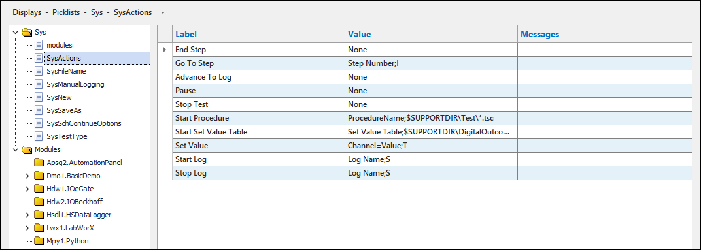
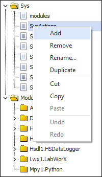
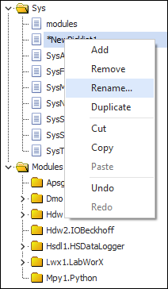
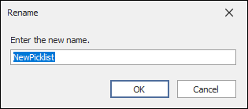
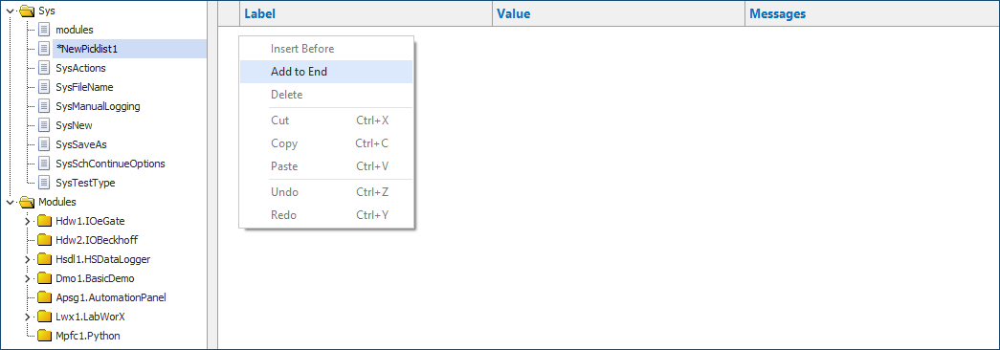
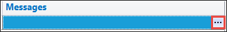
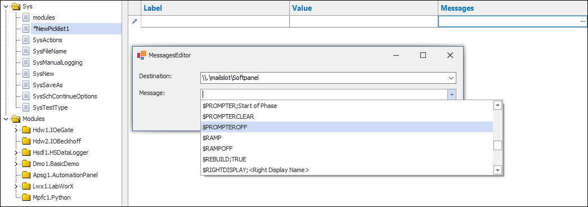

Managing Picklists¶
Overview¶
A picklist is a file that contains a list of values or strings that can be used to populate drop-down fields in display objects such as AutomationPanel's Tile Panel. Picklist values can also be paired with mailslot messages which enables you to send a message or perform an action when an option is selected.
To access the Picklist editor, select Displays > Picklists from the main menu.
Picklists Editor

Creating a New Picklist¶
To create a new picklist, do the following:
- Right-click in the list of picklists and select Add.
Add

- Right-click the name of the new picklist and select Rename...
Rename Picklist

- Enter a new name for the picklist in the Rename dialog.
Rename Dialog

- Click the name of the picklist to open the picklist editor.
- Right-click in the editor and select Add to End. This adds a new row to the editor.
Add to End

- Click the cell in the Label column to enter a label value. This value is the option that the user selects in the drop-down list.
- Click the cell in the Value column to enter a value associated to the label.
- Click the cell in the Messages column to enter a mailslot message or click the button to the right of the field to open the MessagesEditor. For more information, refer to the MessagesEditor documentation.
Button

Messages Editor

- Repeat for each option to display in the picklist.
- Click Save when you're finished.
Picklists Editor Column Descriptions
| Column |
Description |
| Label |
This is the text the operator will see for that picklist selection. |
| Value |
The value written to a parameter. |
| Messages |
The message sent when a picklist option is selected. |